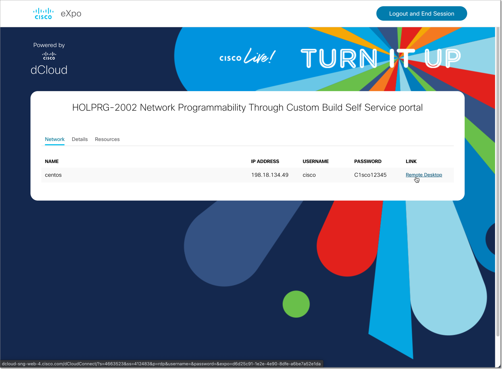

Lab Access¶
In this lab, you will have access to one (1) Linux VM. The Linux VM is configured to provide access to Docker and execute the scripts needed during the Lab.
The lab topology is shown as below:

IP Addressing and Access Information¶
Device |
IP/Hostname |
Port |
Username |
Password |
|---|---|---|---|---|
CentOs |
198.18.134.49 |
RDP / SSH |
cisco |
C1sc012345 |
CSR1K |
198.18.134.11 |
SSH |
cisco |
cisco |
Connecting to the Lab¶
Start your session by opening the following link
Connect to AnyConnect (Optional)¶
Use the Cisco AnyConnect Secure Mobility Client to connect through a VPN, information will be provided after registering via above link in the Details tab.

With the VPN connected, launch your preferred RDP Client to connect to the server specified in the next step.
If you cannot use a VPN, you can launch the Remote link from the Network tab.
{kind=link}
Once inside the remote desktop connection, you can acccess network devices, Docker, GitHub repo and documentation. In addition you can create your enviroment to start to build your self service portal.
Section author: Ali Eftekhari <aleftekh@cisco.com>, Luis Rueda <lurueda@cisco.com>, Jairo Leon <jaileon@cisco.com>, Ovesnel Mas Lara <omaslara@cisco.com>